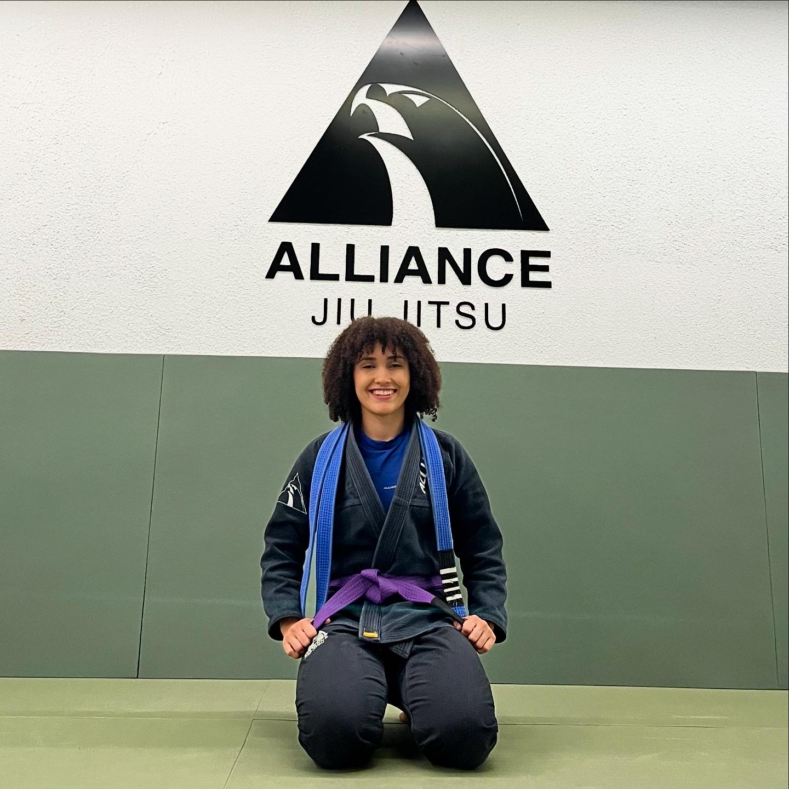

Vila Olímpia · São Paulo
VIVA E TREINE
SEM DOR
Fisioterapia ortopédica e esportiva para quem não aceita se limitar. Do diagnóstico ao retorno ao esporte com plano estruturado e individualizado.
Fisioterapia ortopédica e esportiva para quem não aceita se limitar. Do diagnóstico ao retorno ao esporte com plano estruturado e individualizado.
Tratamentos focados em quem treina e não quer parar.
O ponto de partida para tratar certo. Entendemos seu corpo, sua dor e seus objetivos com a fisioterapia para montarmos juntos um plano 100% direcionado.
Identificamos desequilíbrios musculares e padrões de movimento compensatórios.
Mapeamos amplitude de movimento e limitações específicas que possam te limitar no seu dia a dia.
Protocolos direcionados para BJJ, musculação e outras modalidades.
Saímos com direcionamento claro e metas reais de tratamento e retorno, com atendimento individual em cada sessão.
Avaliações no Google Maps
Avaliações no Doctoralia
"Tenho sessões com a Marissa devido a duas cirurgias no joelho e uma no ombro. Ela é muito atenciosa e me ajudou com as dores e meus treinos. Hoje já consigo escalar e treinar jiu-jitsu novamente."
"Amo as sessões, sempre muito atenciosa, explica tudo com clareza e envia exercícios para casa. Me ajudou muito a aliviar minhas dores."
"A melhor profissional que já conheci. Sempre respeitou meus limites, com atendimento extremamente cuidadoso e excelente resultado."
Um ambiente pensado para você se sentir seguro, acolhido e focado na sua recuperação. Equipamentos de alto padrão, espaço aconchegante e atendimento individualizado do início ao fim.

Fisioterapeuta ortopédica e esportiva formada pela Universidade Federal de Alfenas (UNIFAL-MG), com pós-graduação em Fisiologia do Exercício pela Universidade Federal de São Paulo (UNIFESP).
Atendo desde atletas amadores e profissionais que buscam prevenção, a pessoas que acabaram de operar e querem retorno rápido — sempre com plano individualizado.
Também vivo o que ensino: pratico musculação e sou faixa roxa de jiu-jitsu. Sei o que significa querer voltar ao tatame.
Atendimento particular com toda a liberdade para tratar do jeito certo. Sem abrir mão do seu plano de saúde.
Dicas, orientações e tudo que você precisa saber para viver e treinar sem dor.


Rua Helena, 309, conj 112 — Vila Olímpia, São Paulo
6 minutos caminhando da estação Vila Olímpia
Gratuito no prédio
Seg–Sex: 7h às 20h · Sáb: 8h às 13h
Agende sua avaliação e comece a tratar do jeito certo.